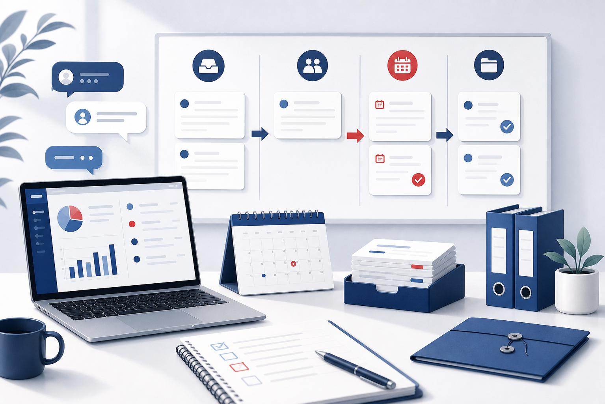
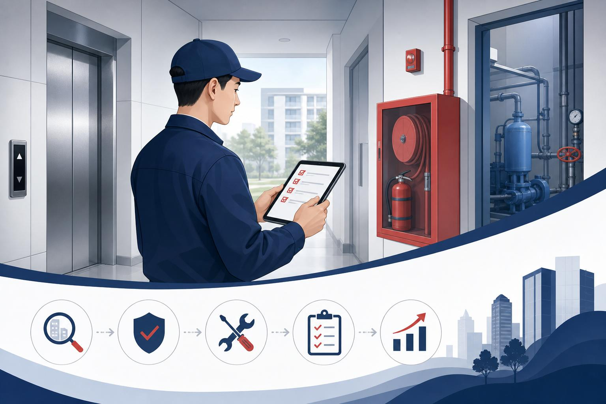

以综合办公室和物业项目管理支持为主要工作场景，处理来自领导、企业微信、项目现场、业委会、居委会、供应商和员工的多线事项。
工作重点不是简单记录问题，而是把事项转成可推进的任务：明确来源、责任人、截止时间、风险等级、下一步动作和复盘结果。
Property Operations / Office Execution
聚焦现场管理、任务统筹、风险控制与数字化落地，把复杂事项拆清楚、推下去、闭起来。
About
以综合办公室和物业项目管理支持为主要工作场景，处理来自领导、企业微信、项目现场、业委会、居委会、供应商和员工的多线事项。
工作重点不是简单记录问题，而是把事项转成可推进的任务：明确来源、责任人、截止时间、风险等级、下一步动作和复盘结果。
Capabilities
把企业微信、领导交办和现场信息汇总成清晰台账，按影响面和截止时间排序推进。
关注设施设备、安全隐患、人员安排、服务响应和现场秩序，推动问题落到责任人。
衔接业委会、居委会、供应商、内部部门和一线员工，减少信息断点和执行误差。
围绕现金流、历史债务、授权边界和现场风险，形成可谈判、可确认的书面材料。


Selected Work
梳理后台、移动端、任务、问题、整改、复查和报表流程，支持品质部日常巡查闭环。
把群消息、领导交办、临时事项整理成任务台账，形成“收件箱 - 跟进 - 归档”的流程。
围绕扫码加客服、便民服务、常用电话和活动信息，制作适合小区现场使用的宣传物料。
围绕现场问题、现金流、历史债权债务、法律授权和业委会履职能力，整理谈判前置条件。
Contact
如需项目协同、物业管理支持、任务台账整理或宣传物料推进，可通过企业微信或工作微信联系。